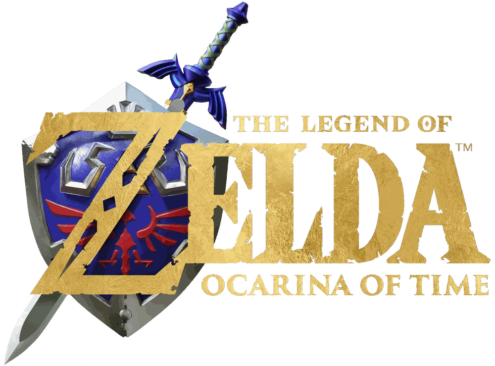
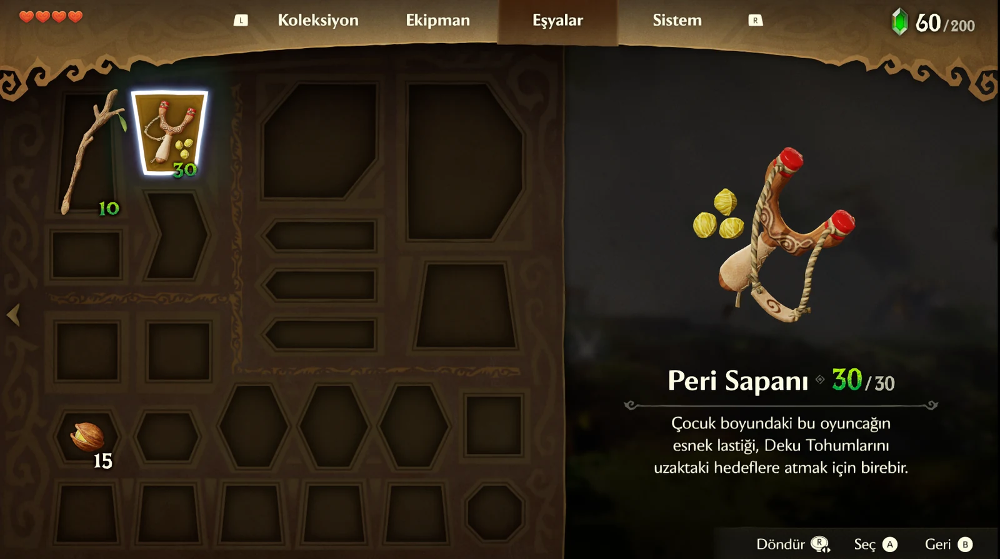
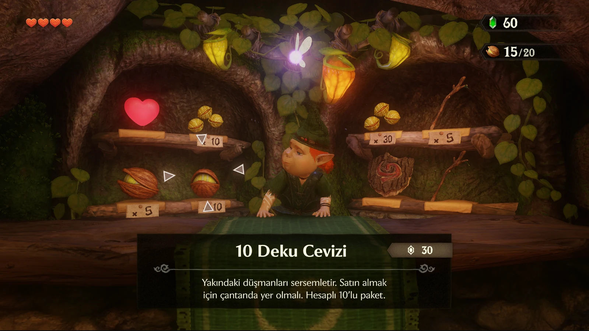

Ocarina of Time
Türkçe Yama
Ocarina of Time için hazırlanmış Türkçe dil yaması. Menüler, eşya açıklamaları ve diyaloglar Türkçe.
Kurulum
Ayrıntılı rehber- 1Yamayı indirZIP dosyasını al
- 2Arşivi çıkartTurkceYama klasörü
- 3Mod dizinine kopyalaMevcut yamayı yedekle
- 4Dili seç ve başlatAmerican English
Oyundan görüntüler
Ekran Görüntüleri
Görseli büyütmek için tıkla.





